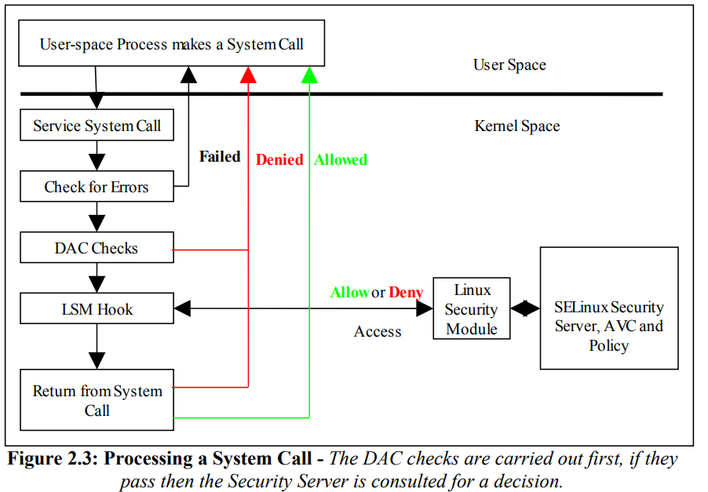
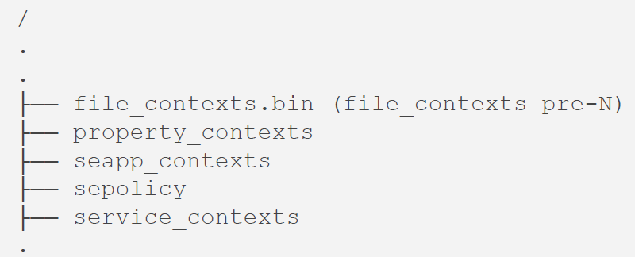
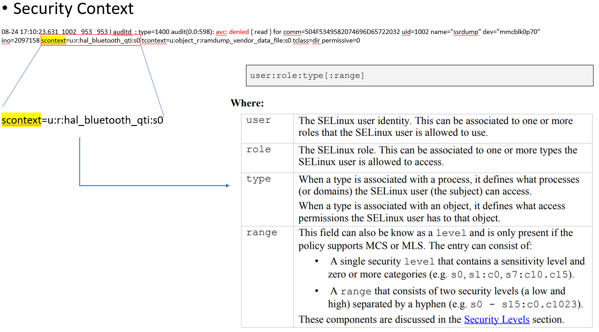
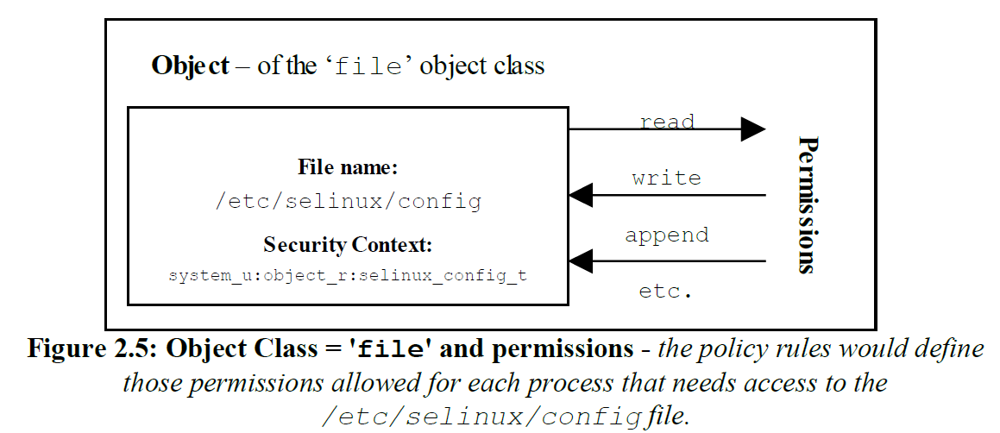
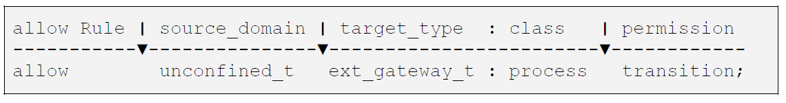
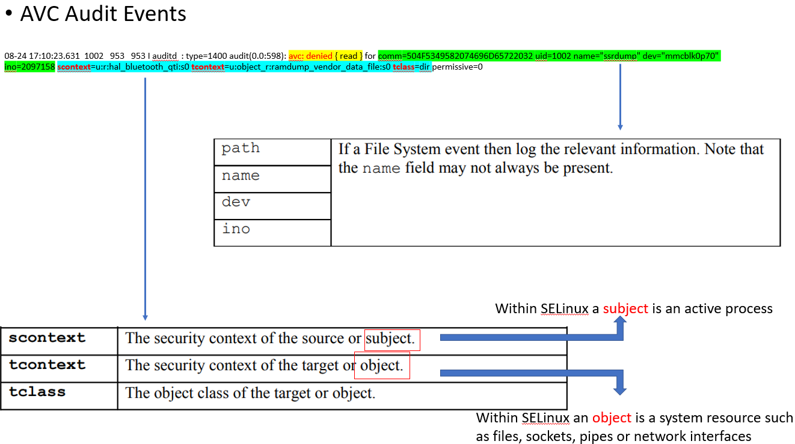
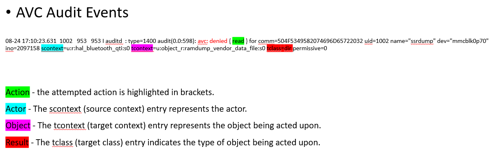

SELINUX学习笔记
Table of Contents
1 General Introduction
SELinux is a labeling system that controls the permissions (read/write, etc.) a subject context has over a target object such as directory/device/file / process / socket / .
Android uses Security-Enhanced Linux (SELinux) to enforce mandatory access control (MAC) over all processes, even processes running with root/superuser privileges. SELinux operates on the principle of default denial: Anything not explicitly allowed is denied.

Each process and object has an associated label, which is also called a context. Contexts are comprised of a user, a role, a type and an multi-level-security (MLS) portion:
- The
typeof a process is often referred to as adomainand is defined in SELinux policy. - The label of an
objectis usually decided by the corresponding security-contexts files.
SELinux policy also contains the rules that state how each domain may access each object.
In Android 4.4 → Android 7.0, SELinux policy files ( sepolicy , file_contexts.bin , property_contexts etc ) are included the rootfs image as follows:

These files contain SELinux policy rules and labels from all development participants, including ODM, SoC, and AOSP. In Android 8.0, these files are modular.
1.1 SELinux Permissive and Enforcing Modes
SELinux has three major modes of operation:
- Enforcing - SELinux is enforcing the loaded policy.
- Permissive - SELinux has loaded the policy, however it is not enforcing the policy rules. This is generally used for testing as the audit log will contain the AVC denied messages as defined in the Auditing SELinux Events section. The SELinux utilities such as audit2allow(1) and audit2why(8) can then be used to determine the cause and possible resolution by generating the appropriate allow rules.
- Disabled - The SELinux infrastructure is not enabled, therefore no policy can be loaded.
1.2 Security Contexts
SELinux requires a security context to be associated with every process (or subject) and object that are used by the security server to decide whether access is allowed or not as defined by the policy.
Within SELinux, a security context is represented as variable-length strings that define the SELinux user, their role, a type identifier and an optional MCS / MLS security range or level as follows:

1.3 Subjects
A subject is an active entity generally in the form of a person, process, or device that causes information to flow among objects or changes the system state.
1.4 Objects
Within SELinux an object is a resource such as files, sockets, pipes or network interfaces that are accessed via processes (also known as subjects). These objects are classified according to the resource they provide with access permissions relevant to their purpose (e.g. read, receive and write), and assigned a security context.
1.4.1 Object Classes and Permissions
Each object consists of a class identifier that defines its purpose (e.g. file, socket) along with a set of permissions5 that describe what services the object can handle (read, write, send etc.).
When an object is instantiated it will be allocated a name (e.g. a file could be called config or a socket my_connection) and a security context (e.g. system_u:object_r:selinux_config_t)

1.4.2 Allowing a Process Access to Resources
This is a simple example that attempts to explain two points:
- How a process is given permission to use an objects resource.
- By using the 'process' object class, show that a process can be described as a process or object.
An SELinux policy contains many rules and statements, the majority of which are
allow rules that (simply) allows processes to be given access permissions to an
objects resources.

allowThe SELinux language allow rule.
unconfined_tThe source domain (or subject) identifier - in this case the shell that wants to exec the gateway application.
ext_gateway_tThe target object identifier - the object instance of the gateway application process.
processThe target object class - the 'process' object class.
transitionThe permission granted to the source domain on the targets object - in this case the unconfined_t domain has transition permission on the ext_gateway_t 'process' object.
2 AVC Audit Events
For SELinux there are two main types of audit event:
- AVC Audit Events - These are generated by the AVC subsystem as a result of access denials, or where specific events have requested an audit message (i.e. where an auditallow rule has been used in the policy).
- SELinux-aware Application Events - These are generated by the SELinux kernel services and SELinux-aware applications for events such as system errors, initialisation, policy load, changing boolean states, setting of enforcing / permissive mode, relabeling etc.


3 Example
A process hal_bluetooth_qti wants to read ramdump_vendor_data_file (dir).
- type definition
#define a type type ramdump_vendor_data_file, file_type, data_file_type, mlstrustedobject;
- directory
/data/vendor/ramdump(/.*)? u:object_r:ramdump_vendor_data_file:s0
- define access rules
allow hal_bluetooth_qti ramdump_vendor_data_file:file create_file_perms; allow hal_bluetooth_qti ramdump_vendor_data_file:dir rw_dir_perms;